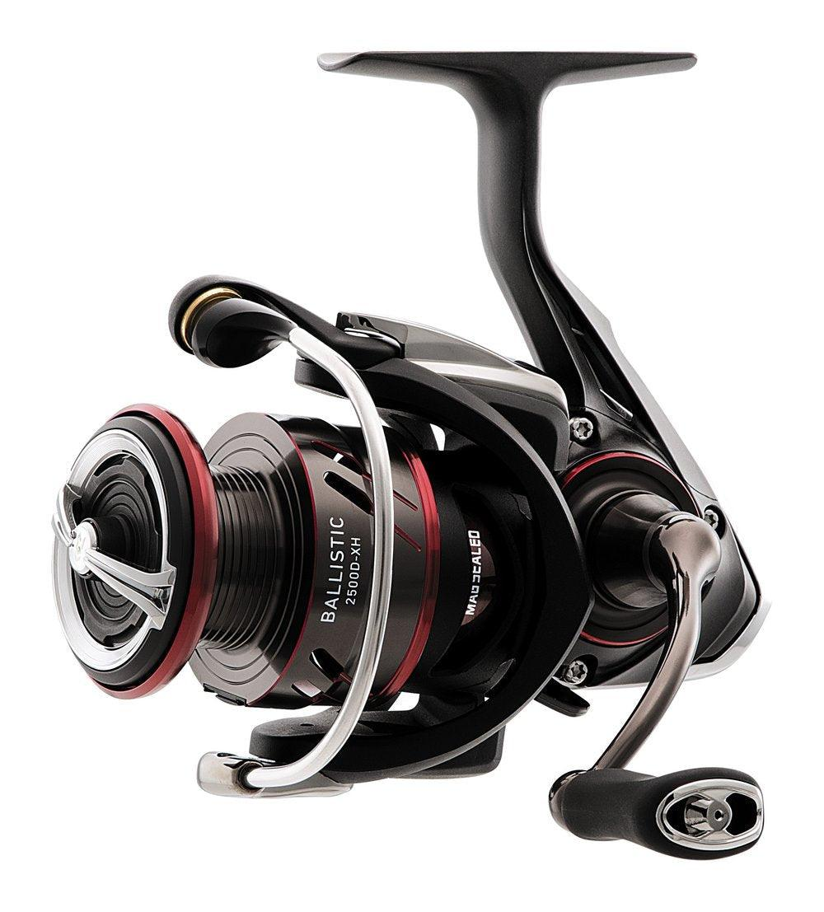

ReelCalc Reel Setup Guide
Daiwa Ballistic LT 2500D-XH Line Capacity & Reel Setup Guide
The Daiwa Ballistic LT 2500D-XH is worth considering for bass and general freshwater spinning. This guide follows model BLSLT2500D-XH, with a published 10 lb / 210 yards mono capacity. Its lightweight ZAION body and AIR ROTOR suit repeated casting, while the MAGSEALED main shaft helps limit water and debris entry. Choose your exact line in the preloaded calculator below to estimate a full spool or optional backing beneath a shorter working length.